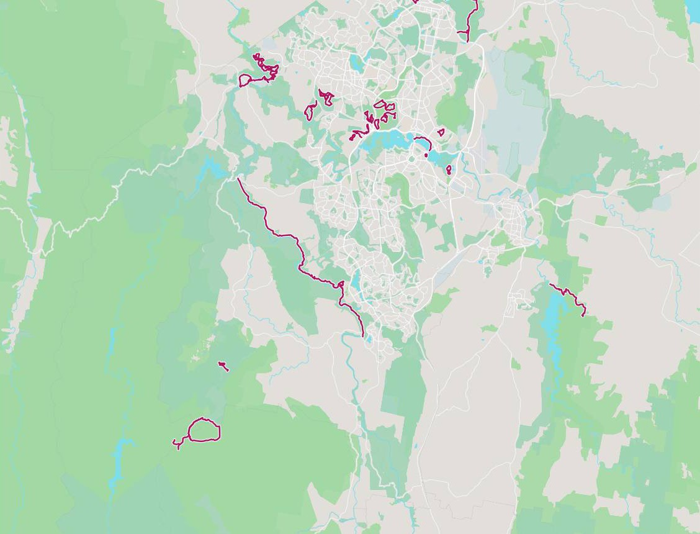
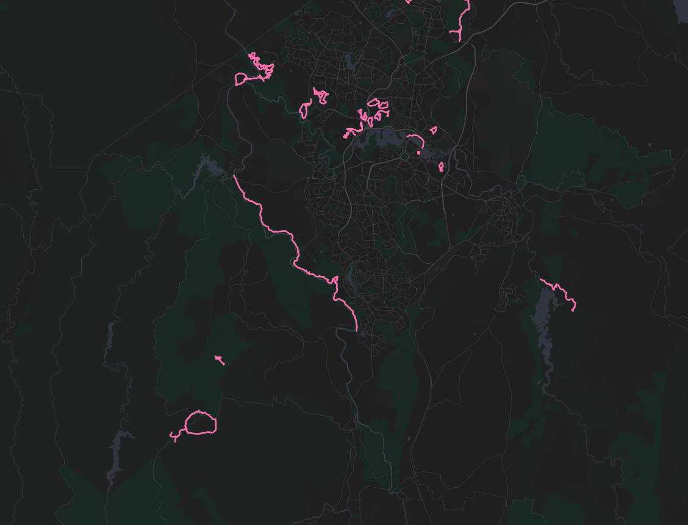

Every trail near Canberra. Mapped, measured, free.
is a free, open trail app made by hikers. Find a walk, see exactly what you're in for, and take the map with you when the signal drops.


37trails mapped
$0forever
0ads
Free, for good
No paid tier and no ads. Offline maps, conditions and safety alerts are free for everyone.
Works in flight mode
Download a trail at home. The map, the route and your recording keep working with no signal.
Made in the open
Open data from OpenStreetMap, open code, and fixes from hikers who've just walked it.
How it works
Find
Search by name or browse the map. Filter by length, climb and difficulty.
Check
See the route, the climb, how long it takes and what other hikers report.
Go
Download it, get directions to the start and follow the line on the trail.